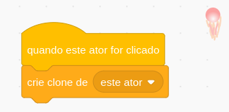
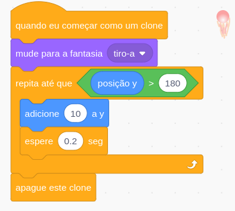
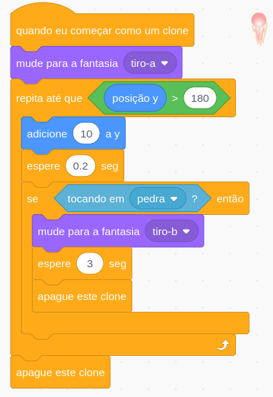
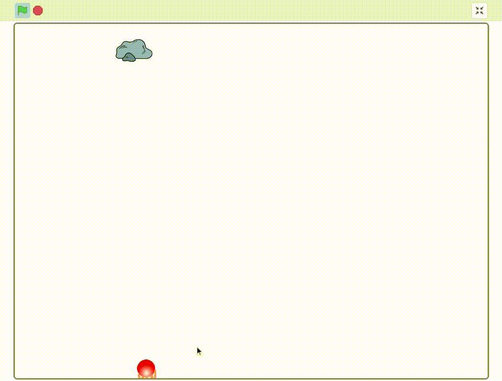

Sempre antes de começar a mexer no Scratch, faça login no Scratch, clicando em "Entrar" no canto superior direito.

Meteoros!
Na aula anterior aprendemos um pouco sobre os diferentes tipos de condicional que existem no Scratch e para quê eles servem.
Nesta aula, nós vamos começar a criar um projeto de jogo. Nosso jogo se chamará "Meteoros!"
No jogo, apareceram meteoros na parte superior da tela e o jogador precisa destruir esses meteoros usando os tiros de uma nave que fica na parte inferior da tela
O primeiro passo que faremos é o algoritmo que detecta quando um tiro da nave atingir o meteoro e o tiro causa uma explosão.
{kind=link}
Atores
- Vamos adicionar os nossos personagens: "Rocks" e "Ball". Podemos alterar os nomes desses atores para "pedra" e "tiro" para ficar mais fácil depois.
- Diminua o tamanho desses atores para eles ficarem relativamente pequenos na tela.
- Alteramos o ator "tiro" para ele parece mais um tiro da nossa nave. Eu pintei ela de vermelho e fiz um pequeno fogo na parte de baixo, mas você pode criar o seu tiro da maneira que quiser.
Movimentando o tiro
- O tiro funcionará da seguinte maneira: sempre que alguém clicar nele, vamos criar um clone desse tiro e esse clone vai se mover para cima até atingir o final da tela ou a pedra.
- Para fazer isto, primeiro coloque os seguintes blocos no Ator do tiro: 
- Para fazer esse clone que criamos se movimentar, adicionamos também o seguintes blocos: 
- O último bloco ("apague este clone") serve para apagar o clone do tiro que se movimento até a parte de cima
Observem que agora estamos usando o bloco de "Repita até que..."
E este bloco tem um condicional ("posição Y" > 180).
Ou seja, o Scratch executará esse loop até o tiro chegar no topo da tela (onde o Y é maior que 180).
Detecção de colisão
- Agora que fizemos o tiro se movimentar até o topo da tela, vamos fazer o tiro explodir se ele atingir a pedra.
- Crie uma nova fantasia para ator "tiro" que pareça uma pequena explosão.
- Para fazer isto, altere os que movimentam o tiro para eles ficarem parecidos com isto: 
Observem que agora estamos usando o bloco "Se ... então" dentro do bloco de "repita"
Este bloco checa se o nosso ator encostou (ou colidiu) com a pedra usando um condicional ("tocando em ...")
Quando ele encostar, mudamos a fantasia para a fantasia de uma explosão e depois de um tempo, apagamos este clone.
Sua tarefa
- Agora que fizemos o tiro detectar que colidiu com a pedra, vamos fazer a deteção também a pedra detectar que o tiro colidiu com ela.
- Faça então a pedra perceber se o tiro está encostando nela. Se estiver encostando, mude para uma fantasia da pedra explodindo (assim como você com o tiro)
- Depois de um tempo de explodir, a pedra desaparece e reparece nova em outro lugar.
Seu jogo deve parecer algo assim no final desta tarefa:
{kind=link}